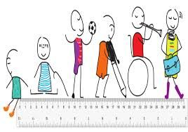

Objetivos
Objetivo: Ordenar fracciones utilizando los símbolos matemáticos (=, <, >) y material concreto.
Objetivo: Ordenar fracciones utilizando los símbolos matemáticos (=, <, >) y material concreto.
DCD a desarrollar: M.3.1.38. Establecer relaciones de orden entre fracciones, utilizando material concreto, y simbología matemática. (=, <, >).
Tiempo: 40 minutos aproximadamente
Materiales:
Descripción de la Actividad
Para fines prácticos de esta actividad, se puede hacer uso de las mismas tarjetas elaboradas para la actividad anterior. Entonces, para esta actividad en primer lugar, el docente debe dividir al curso en dos grupos de manera aleatoria. Después, se les vendará los ojos a todos los alumnos y se les entregará una tarjeta. Una vez que todos tengan una tarjeta, el docente contará hasta tres y se quitaran la venda. Cada grupo rápidamente se quitará la venda y observará la tarjeta que tengan. Luego, uno a uno, los alumnos deben correr una cierta distancia en donde tendrán que formar una fila que esté ordenada de menor a mayor o menor a mayor de acuerdo con las tarjetas que tenga cada estudiante. La actividad termina cuando uno de los dos grupos logre ordenar de manera correcta a todos los integrantes de su grupo.
-Se puede acortar la distancia para los estudiantes con discapacidad motora.
-Se puede reducir el número de tarjetas y el tamaño los grupos.
-Se puede proporcionar apoyo auditivo para los estudiantes con discapacidad auditiva
-Ajustar las tarjetas a las capacidades matemáticas de los alumnos.

Obra publicada con Licencia Creative Commons Reconocimiento No comercial Compartir igual 3.0